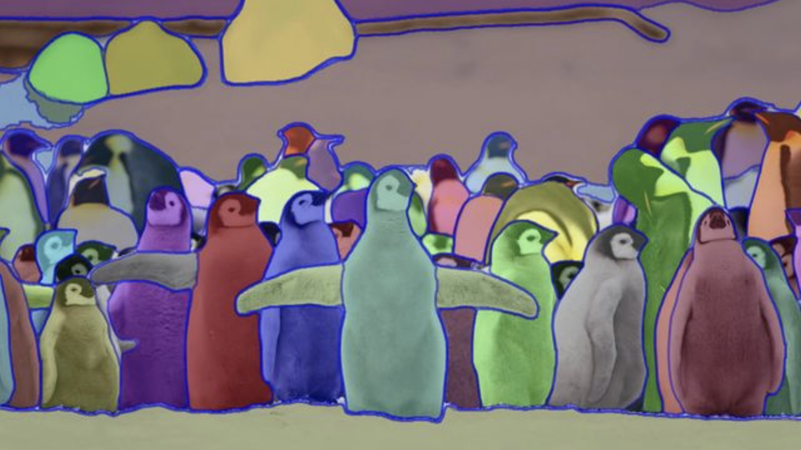

Segment Everything#
{kind=link}
Introduction#
The Segment Anything project aims to make image segmentation more accessible and user-friendly. Image segmentation is the process of identifying which pixels in an image belong to a specific object. This task is essential in computer vision and has numerous applications, such as scientific image analysis and photo editing.
The project introduces a new task, dataset, and model for image segmentation. It consists of the Segment Anything Model (SAM) and the Segment Anything 1-Billion mask dataset (SA-1B), which is the largest segmentation dataset ever created. The dataset is available for research purposes, while the model is released under an open license (Apache 2.0).
The goal of Segment Anything is to eliminate the need for specialized expertise, expensive computing resources, and custom data annotation in image segmentation. The project aims to develop a foundation model for image segmentation, similar to how prompts are used in natural language processing models. This is achieved by training the model on diverse data and making it adaptable to specific tasks.
SAM is a versatile model that can generate masks for any object in any image or video, even if it hasn’t encountered them during training. It can be applied to various image “domains,” such as underwater photography or cell microscopy, without additional training (zero-shot transfer).
Potential applications for SAM include integration into larger AI systems for multimodal understanding, AR/VR applications, creative content creation, and scientific studies on Earth or in space. The project’s creators are excited about the wide range of potential use cases, including those not yet imagined.
SAM: A generalized approach to segmentation#
SAM is a groundbreaking image segmentation model that combines the benefits of both interactive and automatic segmentation approaches. It is a highly versatile model that can perform a wide range of segmentation tasks simply by using the right prompt, such as clicks, boxes, or text. This flexibility is a first in the field of image segmentation.
The model’s capabilities are powered by its training on a diverse and high-quality dataset of over 1 billion masks, enabling it to generalize to new objects and images that it hasn’t encountered during training. This means practitioners won’t need to gather their own segmentation data or fine-tune a model for their specific use case.
SAM’s features include:
Allowing users to segment objects with just a click, interactively clicking points to include or exclude from the object, or prompting with a bounding box.
Producing multiple valid masks when there’s ambiguity about the object being segmented, which is essential for real-world applications.
Automatically finding and masking all objects in an image.
Generating a segmentation mask for any prompt in real-time after precomputing the image embedding, allowing for swift interaction with the model.
How SAM works: Promptable segmentation#
SAM is a state-of-the-art image segmentation model inspired by prompting techniques used in natural language processing and computer vision. The model is designed to generate valid segmentation masks for any prompt, which can include points, boxes, masks, text, or any other information indicating what to segment in an image.
To create a balance between quality and runtime, SAM uses a simple design that allows it to run in real-time on a CPU in a web browser. This feature enables annotators to interact with the model efficiently while annotating images.
SAM’s architecture consists of an image encoder, a prompt encoder, and a decoder. The image encoder produces a one-time embedding for the image, while the lightweight prompt encoder converts any given prompt into an embedding vector in real-time. These two pieces of information are combined in a lightweight decoder that predicts segmentation masks.
Once the image embedding is computed, SAM can produce a segmentation mask within just 50 milliseconds when given any prompt in a web browser. This makes the model highly efficient and suitable for various segmentation tasks in real-time.
{kind=link}
Fig. 94 SAM: Universal segmentation model#
Image encoder#
The image encoder is a key component of SAM that processes images and generates image embeddings. It is designed to be scalable and benefit from powerful pretraining methods. In this case, the encoder uses a pre-trained Vision Transformer (ViT) with minimal adaptations to handle high-resolution inputs.
The image encoder can be any network that generates a CxHxW image embedding. The specific encoder used here is based on the ViT-H/16 architecture, with 14x14 windowed attention and four equally-spaced global attention blocks. This setup outputs a 16x downscaled embedding of the input image.
The goal is to process each prompt in real-time, so the image encoder’s computations are performed only once per image, not per prompt. This allows for a higher number of FLOPs (floating-point operations per second) in the image encoder.
Images are processed at a 1024x1024 resolution by rescaling and padding the shorter side. The resulting image embedding is 64x64. To reduce the channel dimension, a 1x1 convolution is used to get 256 channels, followed by a 3x3 convolution, also with 256 channels. Each convolution is followed by layer normalization.
Prompt encoder#
The prompt encoder in SAM processes different types of prompts, which can be either sparse (points, boxes, text) or dense (masks). These prompts help the model understand what to segment in an image.
For sparse prompts, points and boxes are represented using positional encodings combined with learned embeddings for each prompt type. Free-form text is encoded using an off-the-shelf text encoder from the CLIP model.
For dense prompts, such as masks, convolutions are used to create embeddings. These embeddings are then combined element-wise with the image embedding.
In summary, the prompt encoder processes various types of prompts by generating suitable embeddings that are combined with the image embedding to guide the model in generating segmentation masks.
Lightweight mask decoder#
The mask decoder in SAM is responsible for converting the image and prompt embeddings into a final segmentation mask. It’s inspired by Transformer segmentation models and consists of a modified Transformer decoder block followed by a dynamic mask prediction head.
The decoder takes the image and prompt embeddings and performs several steps to update them: self-attention on the tokens, cross-attention from tokens to the image embedding, a point-wise MLP to update each token, and cross-attention from the image embedding to tokens. These steps are repeated in multiple decoder layers.
Positional encodings are added to the image embedding and prompt tokens whenever they participate in an attention layer, allowing the decoder to capture geometric information.
After the decoder has finished processing, the updated image embedding is upsampled using transposed convolutional layers. Then, the tokens attend once more to the image embedding, and an MLP processes the output token embedding. Finally, a mask is predicted by performing a point-wise product between the upscaled image embedding and the MLP’s output.
The design of the mask decoder aims to efficiently combine image and prompt embeddings to produce accurate segmentation masks while maintaining computational efficiency.
Note
A Multilayer Perceptron (MLP) is a type of artificial neural network composed of multiple layers of interconnected nodes or neurons. It’s designed to process and learn patterns from data, such as images, text, or numerical values. Here’s a simple explanation of how it works:
Input layer: The first layer of the MLP receives the input data, where each node represents a single data point (e.g., a pixel in an image or a word in a text).Hidden layers: These are the layers between the input and output layers, and they perform transformations on the data. Each node in a hidden layer is connected to every node in the previous layer, and each connection has a weight, which is a numerical value.Activation function: Every node in the hidden layers has an activation function, such as the sigmoid or ReLU (Rectified Linear Unit) function. The activation function helps to introduce non-linearity into the network, enabling it to learn complex patterns.Output layer: The final layer of the MLP generates the output or prediction based on the processed input data. The number of nodes in the output layer depends on the type of problem being solved (e.g., classification, regression).Training: The MLP learns from the input data by adjusting the weights of the connections using a technique called backpropagation. The goal is to minimize the error between the predictions and the actual outputs.
Resolving ambiguity#
SAM is designed to handle ambiguous prompts, which may correspond to multiple valid segmentation masks. To address this, the model predicts multiple masks simultaneously (typically three) instead of just one. These three masks often represent different layers, such as whole, part, and subpart, to describe nested masks.
During training, the loss is calculated between the ground truth and each of the predicted masks, but only the lowest loss is used for backpropagation. This technique is commonly used in models with multiple outputs. Additionally, a small head is added to estimate the Intersection over Union (IoU) between each predicted mask and the object it covers, allowing the masks to be ranked.
When multiple prompts are provided, ambiguity is less likely, and the three output masks often become similar. To minimize computation and ensure a single unambiguous mask receives a regular gradient signal, the model predicts a single mask when more than one prompt is given. This is achieved by adding a fourth output token for an additional mask prediction, which is never returned for a single prompt and is the only mask returned for multiple prompts.
Note
Backpropagation is a widely-used algorithm in training neural networks. It helps adjust the weights of the network so that the model can make better predictions. Here’s a simple explanation of the process:
The neural network makes a prediction based on input data and its current weights.
The prediction is compared to the actual output (also called the target or ground truth) to calculate the error or difference.
The error is then used to update the weights of the network, starting from the last layer and moving backwards to the first layer. This process is called backpropagation because the error information flows from the output layer back towards the input layer.
The weights are adjusted in such a way that the error becomes smaller, improving the network’s performance.
This process is repeated multiple times using different input-output pairs from the training dataset, gradually refining the weights of the network until it can make accurate predictions.
Losses#
The mask prediction in SAM is supervised using a combination of two loss functions: focal loss and dice loss. These losses are combined in a 20:1 ratio (20 parts focal loss to 1 part dice loss), as inspired by previous research. Focal loss helps address the class imbalance problem, while dice loss measures the overlap between the predicted and ground truth masks.
Unlike some earlier studies, it was found that using auxiliary deep supervision after each decoder layer didn’t help in this case. Additionally, the Intersection over Union (IoU) prediction head is trained using mean square error loss, comparing the predicted IoU and the actual IoU between the predicted and ground truth masks. This loss is then added to the mask loss with a constant scaling factor of 1.0.
Training#
The training algorithm for SAM (segmentation as multi-task learning) simulates an interactive segmentation setup. Here’s a simplified explanation of the process:
Initially, a random foreground point or bounding box is selected for the target mask. Points are sampled from the ground truth mask, and bounding boxes are created with some added noise.
After predicting a mask from the first prompt, more points are selected from the error region between the previous mask prediction and the ground truth mask.
The model uses the unthresholded mask logits from the previous iteration as an additional prompt to improve its prediction.
Up to 8 iteratively sampled points are used, with diminishing returns observed beyond that. Two extra iterations are added to encourage the model to refine its own mask predictions.
The lightweight mask decoder allows for a relatively large number of iterations since it requires only a small computational overhead.
For training, they use the AdamW optimizer, a linear learning rate warmup, and a step-wise learning rate decay schedule. The model is trained for 90k iterations using a batch size of 256 images. Weight decay, drop path, and layer-wise learning rate decay are applied for regularization. No data augmentation is used. SAM is initialized from an MAE pre-trained ViT-H model and trained across 256 GPUs.
When training with data from the first and second data engine stages only, they apply large-scale jitter for data augmentation. Different training settings are used for ViT-B and ViT-L models, including variations in learning rate, layer-wise decay, weight decay, and drop path rates.
Segment Anything Data Engine#
To generate the released SA-1B, the data engine’s fully automatic stage was used. This stage is designed to generate masks for images that are not annotated, and it uses a special version of SAM to do so. Here’s a simplified explanation of the process:
Cropping: Masks were generated from a grid of points on the full image and additional zoomed-in crops. High-resolution images were used for this purpose. Masks touching the inner boundaries of the crops were removed, and Non-Maximum Suppression (NMS) was applied to rank masks.Filtering: To improve mask quality, three filtering techniques were used:a. Confident masks were kept by using a predicted IoU score threshold of 88.0.
b. Stable masks were retained by comparing two binary masks from the same soft mask, keeping the prediction only if the IoU between them was equal to or greater than 95.0.
c. Uninteresting masks covering 95% or more of an image were removed.
Postprocessing: To fix common errors in masks, two techniques were applied:a. Small, spurious components were removed by eliminating connected components with an area less than 100 pixels.
b. Small, spurious holes were filled by identifying components of inverted masks with an area less than 100 pixels.
Automatic mask generation model: A special version of SAM was used for generating masks. This version had some differences from the default model, including longer training with data augmentation, using only point and mask prompts in simulated interactive training, and having three layers in the mask decoder instead of two.
Segmenting 1 billion masks#
To train the SAM model, a massive and diverse dataset called SA-1B was created, as no such dataset existed before. The data was collected using SAM itself, through an iterative process where annotators interactively annotated images, and the model was updated accordingly.
The annotation process with SAM is much faster than previous methods, taking only about 14 seconds to annotate a mask, making it 6.5x faster than COCO’s manual annotation and 2x faster than the previous largest data annotation effort.
However, interactive annotation alone wouldn’t be sufficient to create the 1 billion mask dataset. So, a data engine was built with three “gears.” The first gear involved model-assisted annotation, the second combined fully automatic annotation with assisted annotation to increase mask diversity, and the third gear involved fully automatic mask creation to scale the dataset.
The final SA-1B dataset consists of over 1.1 billion segmentation masks collected from around 11 million licensed and privacy-preserving images. It has 400x more masks than any existing dataset, and the masks are of high quality and diversity, even comparable to smaller, fully manually annotated datasets.
SA-1B includes images from multiple countries, covering diverse geographic regions and income levels. Although certain regions are underrepresented, the dataset has better overall representation compared to previous segmentation datasets. SAM’s performance across different perceived gender presentations, skin tones, and age ranges is similar, making the model more equitable for real-world use cases.
SA-1B not only supports SAM but can also help other researchers train foundation models for image segmentation. It may also serve as the basis for new datasets with additional annotations, such as text descriptions for each mask.
Conclusion#

Fig. 95 In the future, SAM could be used to identify everyday items via AR glasses that could prompt users with reminders and instructions.#

Fig. 96 SAM has the potential to impact a wide range of domains — perhaps one day helping farmers in the agricultural sector or assisting biologists in their research.#
By sharing their research and the extensive SA-1B dataset, the creators of SAM aim to accelerate advancements in segmentation and broader image and video understanding. As a promptable segmentation model, SAM can be part of larger systems and be utilized in various ways, even for tasks not initially considered during the model’s design.
The concept of composable system design, combined with prompt engineering, allows for more versatile applications than systems designed for fixed tasks. SAM has the potential to become a crucial component in a wide range of domains, such as AR/VR, content creation, scientific research, and more comprehensive AI systems.
Looking forward, a closer integration of pixel-level image understanding and higher-level semantic comprehension of visual content could lead to even more powerful AI systems in the future.